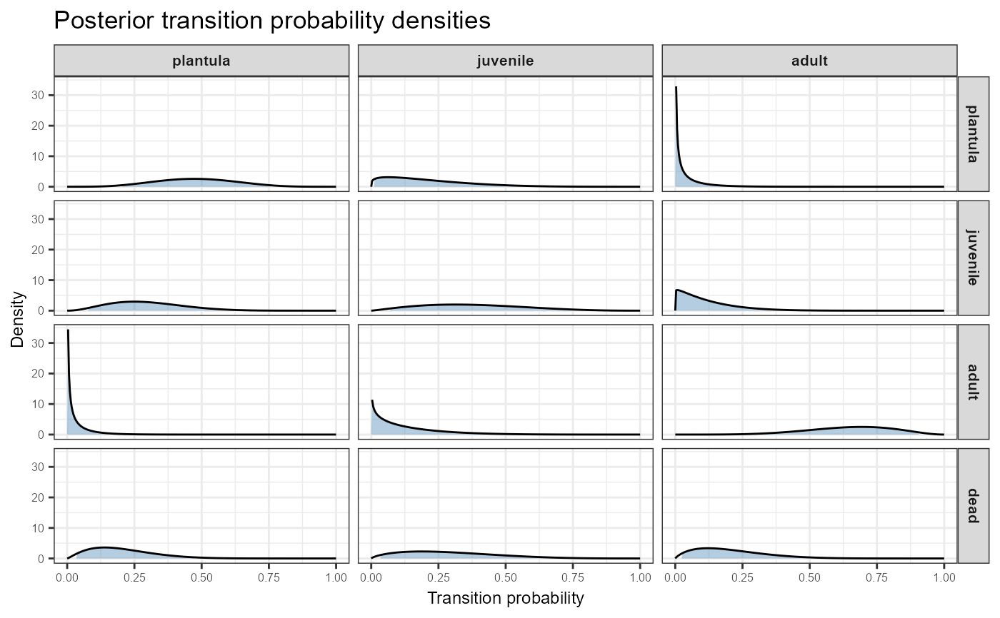
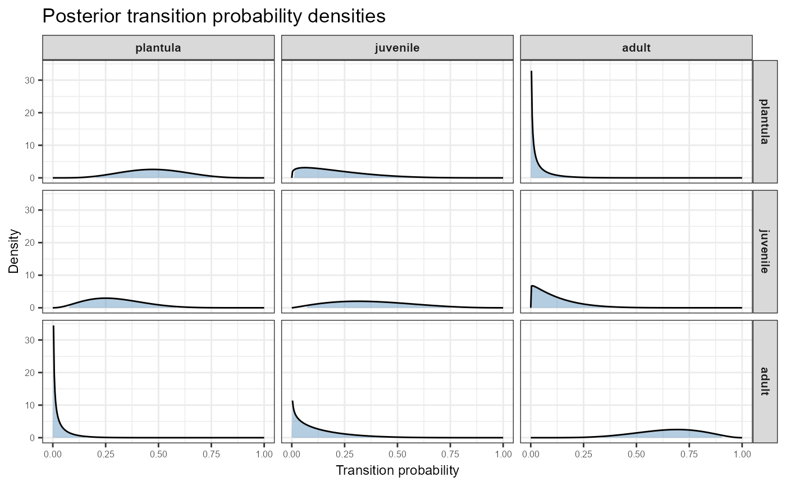

Plot posterior beta density curves for all transition matrix entries
Source:R/CrI_matrix.R
plot_transition_density.RdCreates a ggplot2 visualisation arranged as an \(n \times n\)
matrix of density plots, mirroring the structure of the population
projection matrix. Each panel shows the full marginal posterior beta
distribution for one transition probability, with the credible interval
region shaded. Columns correspond to source stages (from) and rows to
destination stages (to), including the dead fate as the bottom row.
Usage
plot_transition_density(
TF,
N,
P = NULL,
priorweight = -1,
ci = 0.95,
stage_names = NULL,
include_dead = TRUE,
title = "Posterior transition probability densities"
)Arguments
- TF
A list of two matrices, T and F, as output by
projection.matrix.- N
A vector of observed stage distribution at the start of the transition period.
- P
A matrix of priors for each column. Defaults to uniform.
- priorweight
Total weight for each column of prior as a percentage of sample size, or 1 if negative. Defaults to -1 (uninformative).
- ci
Credible interval width as a probability between 0 and 1. The shaded region in each panel covers this interval. Defaults to 0.95.
- stage_names
Optional character vector of stage names in the same order as the columns of the transition matrix. If
NULL, names are taken fromcolnames(TF$T), or generic labels are used.- include_dead
Logical. Whether to include the dead fate as the bottom row of the matrix plot. Defaults to
TRUE.- title
Character. Plot title.
Value
A ggplot object arranged as an \(n \times n\) grid (or
\((n+1) \times n\) when include_dead = TRUE), with source stages
as columns and destination stages as rows.
Examples
T_mat <- matrix(c(0.5, 0.3, 0.0,
0.2, 0.4, 0.1,
0.0, 0.1, 0.7), nrow = 3, ncol = 3)
F_mat <- matrix(c(0.0, 0.0, 1.5,
0.0, 0.0, 0.0,
0.0, 0.0, 0.0), nrow = 3, ncol = 3)
TF <- list(T = T_mat, F = F_mat)
N <- c(10, 5, 8)
# Include dead fate as bottom row (default)
plot_transition_density(TF, N,
stage_names = c("plantula", "juvenile", "adult"))

# Transitions only, no dead row
plot_transition_density(TF, N,
stage_names = c("plantula", "juvenile", "adult"),
include_dead = FALSE)
